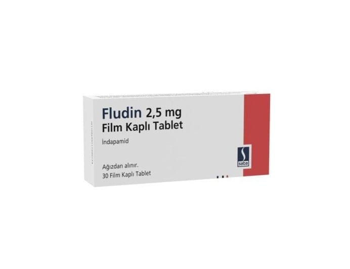

Fludin 2.5 mg Film Kaplı Tablet, 30 Adet

Ne için kullanılır
KT · Bölüm 1FLUDİN beyaz renkli, yuvarlak şekilli tablettir. 20 ve 30 tabletlik blister ambalajlarda sunulmaktadır. FLUDİN esansiyel hipertansiyon tedavisi için doktorunuz tarafından reçetelenmiştir. Yüksek kan basıncını (hipertansiyon) düşürmeye yarayan bir ilaçtır ve “indapamid” atkif maddesini içerir. “İndapamid” diüretikdir. Pek çok diüretik böbreklerde oluşan idrar miktarını arttırır. Ancak indapamid biraz farklıdır. Çünkü böbreklerde oluşan idrar miktarını çok az arttırmaktadır.